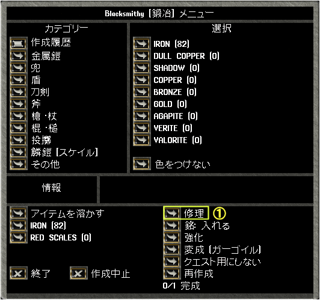
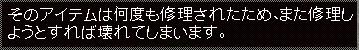

装備品の修理
１．装備品損傷の概要
武器、鎧、盾には、「 耐久性 ： 50 ／ 50 」のように耐久値の表示がされています。
これらの装備品が戦闘をすることで消耗すると、まず、耐久値の分子の数値が減っていきます。
そして、耐久性の分子が0になると、下のようにのメッセージが表示されます。
上記の表示が出た状態でさらに使い続けていくと、同じメッセージを出しながら、今度は耐久性の分母の数値が減りはじめます。
そして、分母が0になるとその装備品は破壊して失われます。
装備品耐久値の減り方 ： 42/42 → 41/42 → ・・・→ 1/42 → 0/42 → 0/41 →・・・→ 0/1 → 破壊
装備品を修理すると、耐久値の分子が分母と同じまで戻ります。
装備品は破壊して失われるまで同じ性能を保っていますが、長持ちさせるには、ある程度使ったところで修理をして耐久値を戻す必要があります。
対象スキル ： 鍛冶、裁縫、細工、大工、石工、弓工、硝工
２．装備品修理の手順
装備品の修理は下記のように行います。
- 鍛冶・裁縫などの作成ツールを使い、作成メニューを出す。
- 修理ボタン（①）を押し、修理したい装備品をターゲットに指定する。
- 修理者のスキルと装備品の損傷具合より、成功か失敗か判定される。
修理に成功した場合、装備品の耐久度が100％に戻る。
失敗した場合、装備品耐久値の分母が1減少する。

- 普通に修理に成功した場合のメッセージです。
- 修理に成功しても、最大耐久値（耐久値表示の分母側）が1減少したときのメッセージです。
- 修理に失敗した場合のメッセージです。最大耐久値（耐久値表示の分母側）が1減少します。
- 耐久値が０／１となってしまった装備品は修理しようとしても下のメッセージが出て修理不能となります。

３．修理の難易度
修理の難易度は耐久度（現在耐久値と最大耐久値の比）が0％に近づくほど上がり、成功させるためには高いスキルが必要となります。
また、修理に成功しても、最大耐久値が減少する場合があります。
修理の成功率および修理成功時に最大耐久値が下がる確率は、下のようになっています。
修理成功確率（％）＝100－{(1－現在耐久値／最大耐久値)×125－専門スキル}×2
成功時最大値減少確率（％）＝40＋(最大耐久値－現在耐久値)－専門スキル/10
耐久値を80ほど減らして修理した場合、修理に成功しても最大耐久値を1減らすことになります。
装備品の残耐久度と修理難易度
（修理失敗」以外を「修理成功」としています）
| 残り耐久度 |
必要スキル |
完全成功スキル |
| ９０％ |
０．０
(成功率75％) |
１２．５ |
| ８０％ |
０．０
(成功率50％) |
２５．０ |
| ７０％ |
０．０
(成功率25％) |
３７．５ |
| ６０％ |
０．１ |
５０．０ |
| ５０％ |
１２．６ |
６２．５ |
| ４０％ |
２５．１ |
７５．０ |
| ３０％ |
３７．６ |
８７．５ |
| ２０％ |
５０．１ |
１００．０ |
| １０％ |
６２．６ |
１１２．５ |
| ０％ |
７５．１ |
１２５．０ |
４．修理契約書
修理契約書[repair deed]は、NPCキャラクターに装備品の修理をしてもらう契約書です。
作成方法
- 作成メニューを出し、修理コマンドを選択する。
- ブランクスクロールをターゲットに指定する。
- 使用した道具（スキル名）とスキル値（スキル称号）に応じた修理契約書が作られる。
Repair Service Contract [修理契約書] （スキル称号）（スキル名）
対象スキル
修理契約書を作成できるスキルは、鍛冶、裁縫、細工、大工、弓工、石工（大工, mallet and chisel使用）、硝工（錬金, blow pipe使用）です。
注意点
- 修理契約書を作成するためには、専門スキルが50.0以上必要です。
- Apprentice・・・・スキル50.0～59.9
- Journeyman・・・・スキル60.0～69.9
- Expert・・・・スキル70.0～79.9
- Adept・・・・スキル80.0～89.9
- Master・・・・スキル90.0～99.9
- Grandmaster・・・・スキル100.0～109.9
- Elder・・・・スキル110.0～119.9
- Legendary・・・・スキル120.0以上
- アイテム数が125個の状態で修理契約書を作成することはできない。
- 一部の装備品は修理契約書による修理はできず、生産メニューから直接修理をする必要がある。
 wand・・・大工
wand・・・大工 Ancient Samirai Helm（7周年記念装備）・・・鍛冶
Ancient Samirai Helm（7周年記念装備）・・・鍛冶